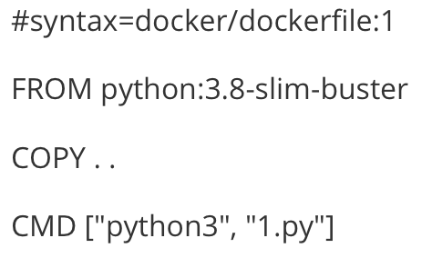
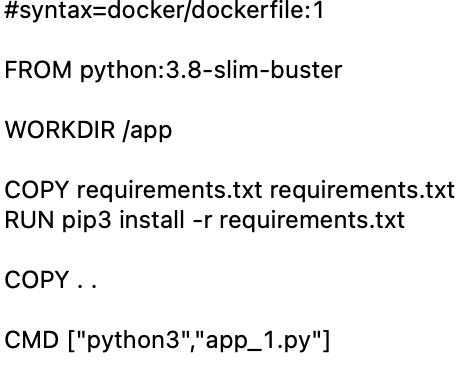
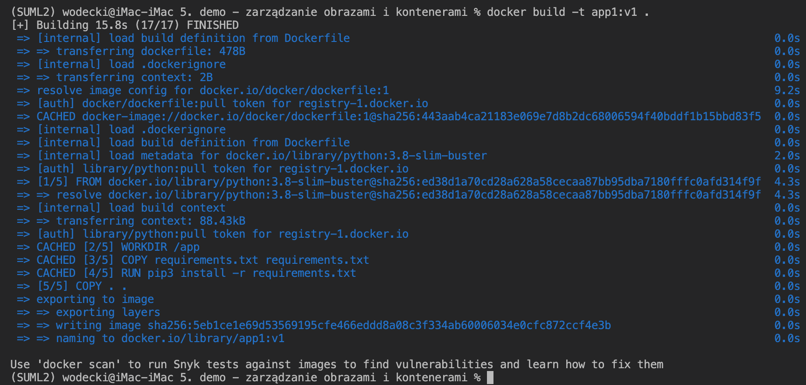
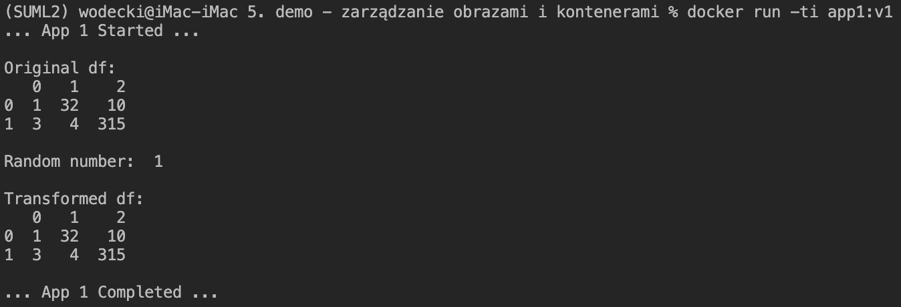
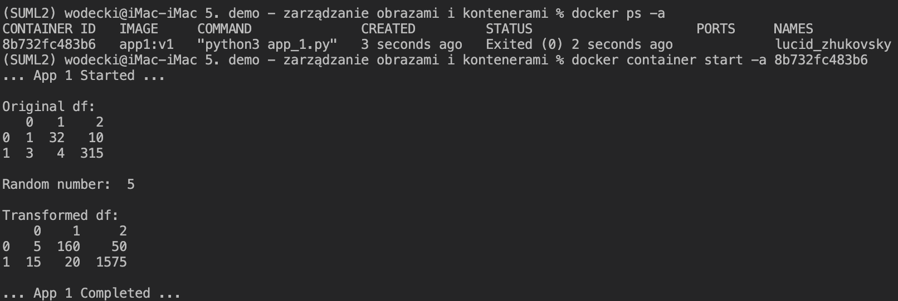
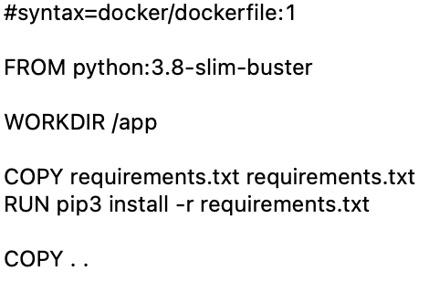
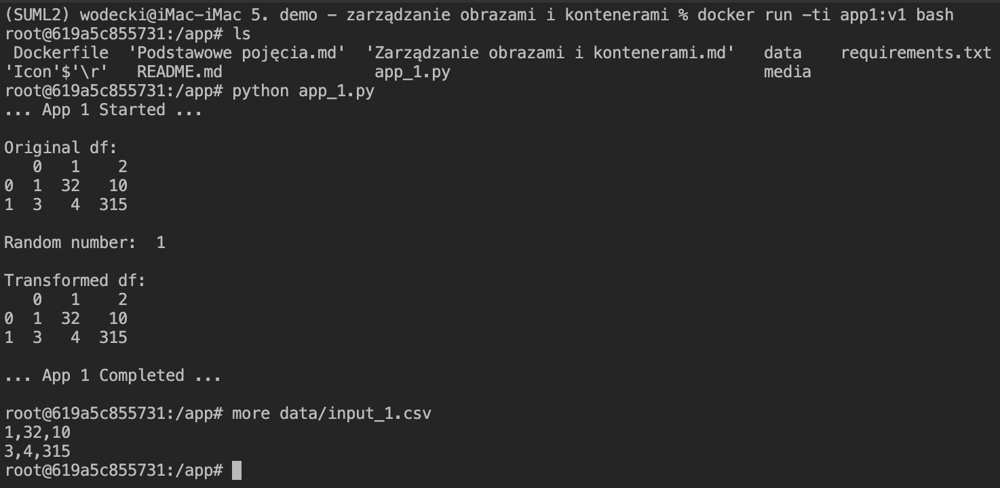
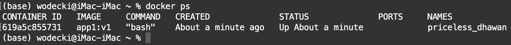
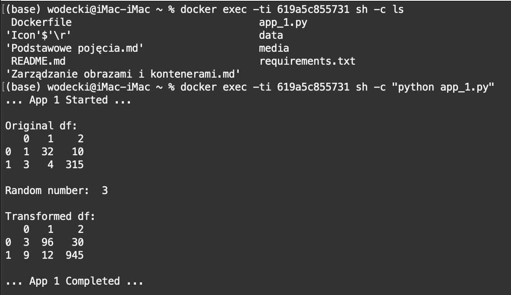
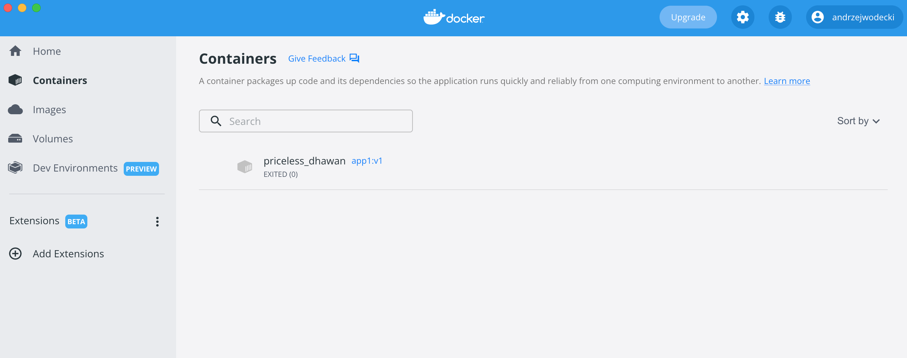

5.2 Organizacja, pierwszy obraz i prosta aplikacja
5.2.1 Demo - pierwszy obraz docker
Organizacja
- Załóż konto na Docker
- Zaloguj się w Docker Hub, i stwórz pierwsze repozytorium
- Zainstaluj aplikację Docker
Obraz
Załóż folder, i stwórz w nim prostą aplikację
Stwórz plik Dockerfile, na wzór: 
Stwórz obraz docker nadając mu nazwę (flaga –tag) pierwsza_aplikacja:
$ docker build --tag pierwsza_aplikacja .Uruchom obraz o nazwie pierwsza_aplikacja lokalnie:
$ docker run pierwsza_aplikacja
Udostępnienie
Zmień nazwę obrazu tak, by móc go opublikować swoim repozytorium Docker Hub:
$ docker build -t andrzejwodecki/ml_tests:pierwsza_aplikacja .Opublikuj obraz w swoim repozytorium Docker Hub:
$ docker push -t andrzejwodecki/ml_tests:pierwsza_aplikacjaUruchom obraz na innym systemie:
zainstaluj na nim Docker’a
uruchom kontener:
$ docker run -t andrzejwodecki/ml_tests:pierwsza_aplikacja
Przydatne źródła
Najlepszym znanym mi źródłem wiedzy nt systemu Docker jest oficjalny kurs dostępny na stronie:
5.2.2 Demo: trenowanie i ewaluacja
W tym prostym ćwiczeniu stworzysz i uruchomisz lokalnie prosty proces trenowania i ewaluacji modelu.
Aby stworzyć obraz, w linii komend wpisz:
docker build --tag train_eval .
Aby uruchomić kontener, w linii komend wpisz:
docker run -ti train_eval
Zauważ, że w tym podejściu:
- kontener automatycznie uruchamia skrypt
run.py(zgodnie z ostatnią instrukcją w plikuDockerfile) - jest zarzymywany bezpośrednio po ukończeniu jego realizacji (możesz to sprawdź uruchamiają w linii komend polecenie
docker ps) - wszystkie pliki niezbędne do uruchomienia (komponenty i artefakty) są przechowywane w kontenerze
- użytkownik nie ma do nich dostępu, w szczególności nie może ich modyfikować.
5.2.3 Ćwiczenie: prosta transformacja danych z pandas
Uwaga: komplet wersji demonstracyjnych, ćwiczeń i rozwiązań oraz rekomendacje dotyczące środowiska uruchomieniowego znajdziesz tutaj:
https://github.com/wodecki/ASI_2022
W tym ćwiczeniu stworzysz i uruchomisz prosty kontener docker umożliwiający wczytanie danych z istniejącego pliku csv, przemnożenie ich przez 2 i zapis tak zmienionej ramki danych do nowego pliku.
Lista kontrolna
-
Skrypt Python
app1.py:- Wczytuje pakiet pandas w poprawnej wersji i drukuje tę wersję na ekranie
-
Wczytuje zawartość pliku
/input/input.csvdo ramki danych, i drukuje ją na ekranie - Mnoży tę treść x2, przypisuje do nowej ramki danych i drukuje wynik na ekranie
-
Zapisuje nową ramkę do pliku tekstowego
/output/output.csv
-
Plik
Dockerfilespecyfikujący obraz, który kopiuje komplet niezbędnych danych, ale nie uruchamia skryptuapp1.py(dzięki czemu kontener nie zatrzymuje się po jego uruchomieniu) -
Obraz docker o nazwie
app1 -
Plik README.md z instrukcją dla użytkownika pokazującą,
- w jaki sposób zbudować obraz
-
w jaki sposób uruchomić kontener tak, by użytkownik mógł obejrzeć i modyfikować pliki wewnątrz kontenera (komponent
app1.pyi artefaktinput\input.csv).-
Wskazówka: aby umożliwić edycję pliku, po uruchomieniu kontenera trzeba w nim zainstalować wybrany edytor. Przykładowo, dla edytora
nano, uruchomić:-
$ apt-get update -
$ apt-get install nano
-
-
Wskazówka: aby umożliwić edycję pliku, po uruchomieniu kontenera trzeba w nim zainstalować wybrany edytor. Przykładowo, dla edytora
-
w jaki sposób uruchomić skrypt
app1.pydostępny wewnątrz uruchomionego kontenera?
5.2.4 Zarządzanie obrazami i kontenerami
Zrozumienie podstaw działania obrazów i kontenerów jest krytycznie ważne do ich efektywnego wykorzystania w projektach Data Science. Poniżej przedstawimy kilka kluczowych koncepcji, ilustrując je prostymi przykładami.
Zarządzanie obrazami
Najczęściej pierwszym krokiem w procesie tworzenia nowego obrazu jest zgromadzenie w jednym miejscu odpowiednich plików z danymi oraz skryptów oraz przetestowanie ich poprawnego działania.
W kolejnym kroku tworzymy plik Dockerfile, specyfikując zakres i konfigurację uruchamiania obrazów.
W naszym przykładzie zaczniemy od następującego pliku Dockerfile:

Obraz tworzymy komendą:
docker build -t app1:v1 .

Możemy teraz sprawdzić, czy nowy obraz pojawił się w systemie, korzystając z komendy (wykorzystujemy to przekierowanie potoku do funkcji grep po to, by pokazać wyłącznie obrazy o nazwie app1) :
docker images | grep app1
Jak widać, nowy obraz pojawił się w naszym systemie.
Obrazy możemy też usuwać (docker images rm <ID kontenera>), zmieniać ich nazwę, etc.
Zarządzanie kontenerami
Komenda:
docker ps
wyświetla wszystkie aktualnie uruchomione kontenery.
Aby zobaczyć wszystkie kontenery w systemie, również te zatrzymane, trzeba uruchomić tę komendę z flagą -a:
docker ps -a
Uruchomienie tych dwóch komend w “czystym” systemie powinno zwrócić pusty wynik.
Zobaczmy, co się stanie, gdy uruchomimy nasz obraz wykorzystując komendę:
docker run -ti app1:v1
Program uruchamia się poprawnie: 
Komenda docker ps zwraca pusty wynik, ale już docker ps -a wyświetla na ekranie:
image-20220530185553968
Jak widać, kontener po uruchomieniu się zatrzymał: nie jest już aktywny (pusty komunikat docker ps), ale istnieje w repozytorium kontenerów.
Dzieje się tak dlatego, że w ostatniej linii naszego pliku Dockerfile wywołaliśmy komendę CMD [“python3”,“app_1.py”] uruchamiającą skrypt Python: kontener po poprawnym wykonaniu skryptu otrzymuje sygnał do zatrzymania. Brak tej komendy:
- Z jednej strony nie uruchamiałby skryptu app_1.py. Jego uruchomienie byłoby możliwe jedynie “z wnętrza” kontenera
- … ale z drugiej nie zatrzymuje działania kontenera.
Spróbujmy teraz uruchomić kontener ponownie, wykorzystując w tym celu jeszcze raz komendę:
docker run -ti app1:v1
Tak, jak poprzednio komenda docker ps zwraca pusty wynik, ale docker ps -a wyświetla na ekranie:
image-20220530185851387
Wynika z tego, że efektem ponownego uruchomienia kontenera komendą docker run ... było utworzenie nowego kontenera.
Wynika z tego istotna obserwacja: wielokrotne korzystanie z funkcji docker run ... generuje wiele kontenerów, osobny dla każdego z uruchomień.
Po pewnym czasie kontenerów może być tak dużo, że konieczne jest ich usunięcie. Można to zrobić “ręcznie” korzystając z komendy docker container rm <ID kontenera>:
image-20220530190309976
W ekstremalnej wersji można też skorzystać z komendy docker container prune usuwającej wszystkie kontenery.
Uruchamianie zatrzymanych kontenerów
Aby uruchomić ponownie zatrzymany kontener, uruchom:
docker container start <ID kontenera>:

Wykorzystaliśmy tu flagę -a (attach), aby móc wyświetlić komunikaty z kontenera.
Tak, jak poprzednio, po uruchomieniu jest on zatrzymywany, a wszystkie generowane przez niego dane tracone. O tym, jak je zachować, opowiemy w części poświęconej wymianie plików pomiędzy kontenerami a hostem.
Uruchamianie komendy wewnątrz uruchomionego kontenera
Do uruchomienia komendy wewnątrz kontenera można wykorzystać komendę EXEC:
docker exec -ti <ID kontenera> COMMAND
Uwaga: przykład poniżej pokazuje, że jest to możliwe wyłącznie w sytuacji, gdy kontener jest uruchomiony:
image-20220530192639210
Jak spowodować, aby nasz kontener nie był zamykany bezpośrednio po uruchomieniu?
Pierwszą z opcji przedstawiliśmy powyżej: wystarczy, aby nasz Dockerfile nie zawierał na końcu komendy uruchamiającej skrypt, jak na przykładzie poniżej:

Inna możliwość to uruchomienie kontenera z komendą bash na końcu linii komendy:
docker run -ti app1:v1 bash
Dzięki niej uruchamiamy kontener i otrzymujemy dostęp do jej powłoki bash. Będąc w niej, możemy uruchomić nasz skrypt, przeglądać i modyfikować pliki, etc.:

Tym razem już komenda docker ps wskazuje, że nasz kontener jest aktywny:

W efekcie, można już w nim uruchamiać różne programy wykorzystując komendę exec:

Jest to o tyle wygodne, że po każdym takim uruchomieniu wracam do naszej lokalnej powłoki. Może mieć to bardzo ciekawe zastosowania w uruchomienia produkcyjnej (zarządzanie uruchamianiem kontenerów poprzez skrypty powłoki).
Zarządzanie obrazami i kontenerami z wykorzystaniem aplikacji Docker Desktop oraz IDE
Linia komend to nie jedyny sposób na inspekcję i zarządzanie obrazami i kontenerami. Można do tego z powodzeniem wykorzystać:
- Aplikację Docker Desktop: 
- Środowisko IDE, np. MS Visual Studio Code: